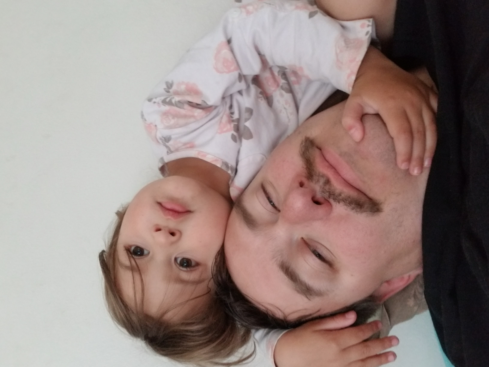
 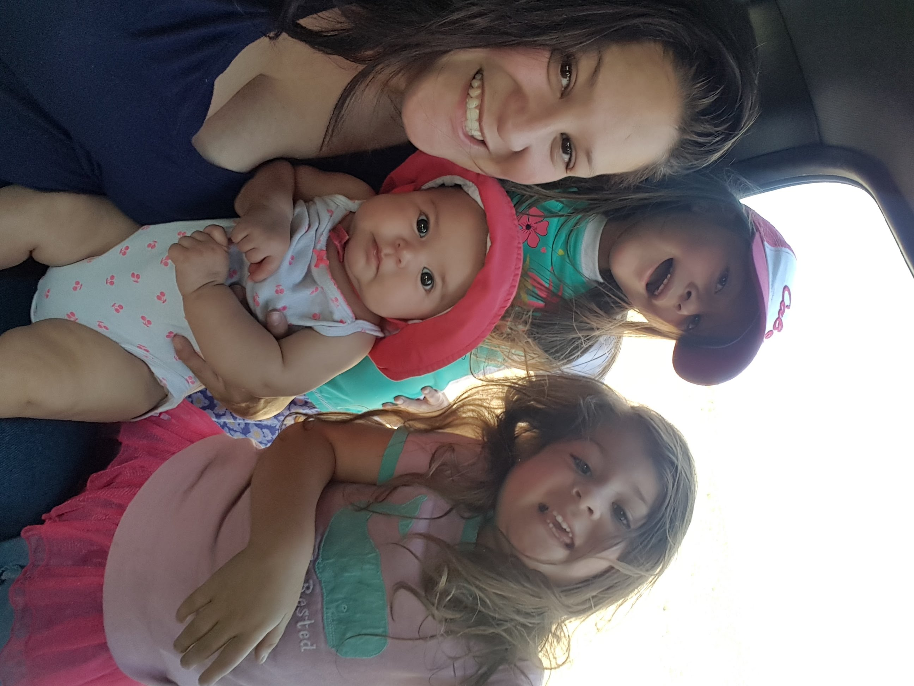
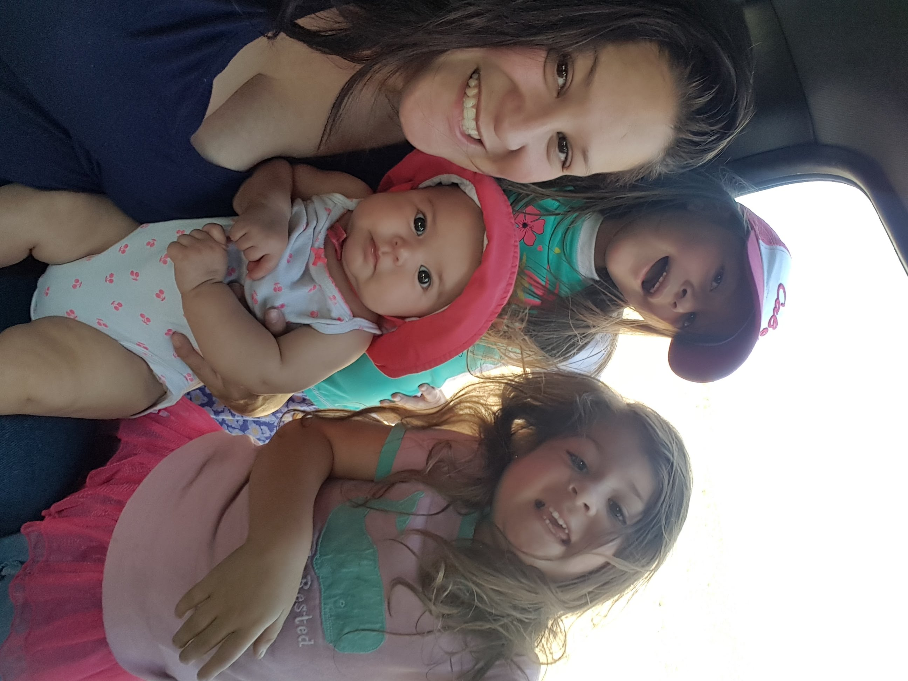
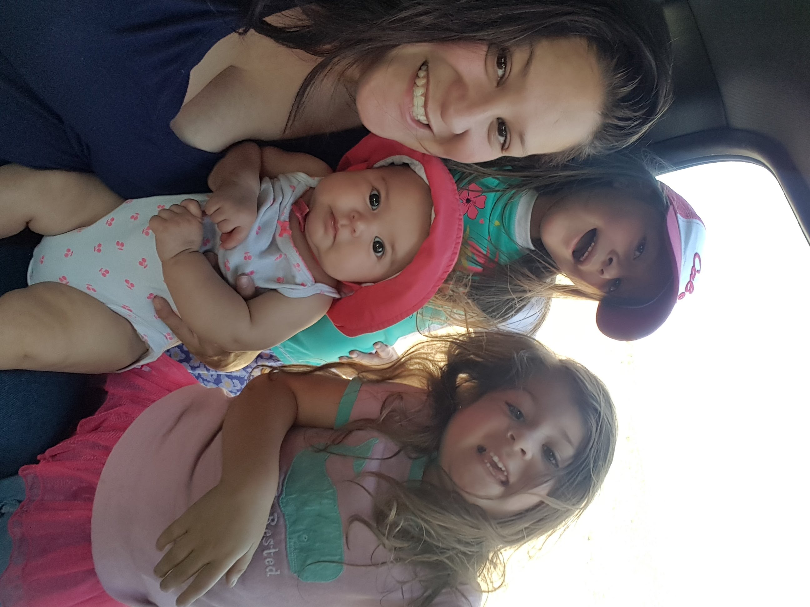
I grew up in a large family. I was the middle child of five kids and we adopted a few stray neighborhood children. I always loved being a part of a big family, but I never consciously planned on having a family as large as the one I made. Initially we had four children, two boys and two girls, and we thought that was the perfect number. Well, sometimes things don't work out as planned, and number five came along four years after the one that was our current youngest. My husband and I had a discussion, decided we had already hit maximum work load, and made number six! Now I have two boys and four girls. While having a large family like we do may be expensive and time consuming, it has also filled my house with an over abundance of love. I would not have things any other way.
Below you will see, from left to right, my daughter Charlotte, my daughter Jackie at jiu-jitsu with my husband, me, and my daughters Kimber, Audrey, and Charlotte.
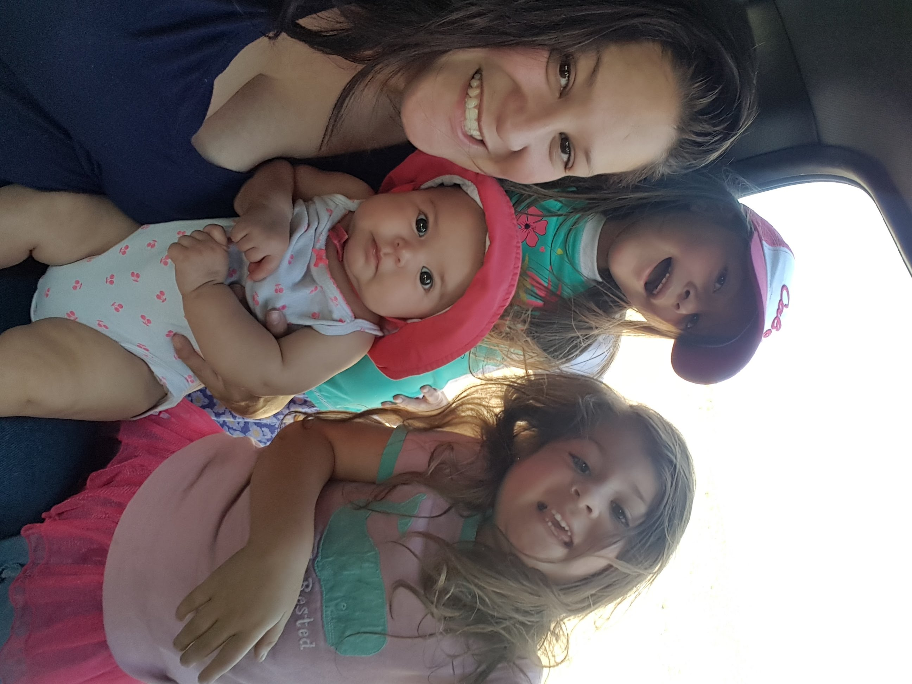
While I know large families are not necessarily in style anymore, and it certainly has made school a great deal harder, I would not have it any other way. I love sharing my interests, like hunting, camping and fishing, with my children. I'm also lucky to have a handsome supportive, strong husband, that lets me pursue all of the crazy endeavors that I do.
“Live the full life of the mind, exhilarated by new ideas, intoxicated by the romance of the unusual.”
-by Ernest Hemingway
That quote truly speaks to me. I cannot begin to explain to you the magnitude of how my life has changed by just trusting and choosing something so unusual that has driven me to do many things with passion and to accomplish them. I have married quite a rare specimen that has given me such a beautiful life of knowledge, love and support. Every morning as I rise, I feel grateful for the many blessings’ life has given me, I watch the sunrise every morning and dwell in its warmth of love and peace, as the sun begins to touch the shadow, I see how everything begins to come alive, it’s like watching your baby take its first breath. While I sit in the mornings this is where I give my mind the space without distraction the time to evolve to what the day will look like what kind of things will I do and try that day. I don’t worry about the next day because it has not come, but I try to enjoy the moment I am in.
Some of the most beautiful moments of my life has been to share my life and hobbies with my children and husband. I love to fish, hunt, and camp, but the most enjoyable hobby for me has been fly fishing. There is something about the perfection of a perfectly cast dry fly, touching lightly on the water, and then being eaten by a big wiley trout. Most of the time I let my fish go too, unless it is mortally wounded by our encounter, but that is rare with fly fishing. My husband tells me that I like messing with fish more than I like eating fish.
I also enjoy wingshooting. There is the same sort of perfection when all the conditions align with my dog on point, a pheasant takes wing, and then falls to a well placed shot. If I could remove a hook and release that same bird I would. It's a strange feeling to love and respect an animal and still hunt and kill it and I always have feelings of remorse after it is done. However, my dog loves it, and I love to cook. Hunting is a way that I can get ingredients that would otherwise be unavailable to me.
Which brings me to my next section...
Below you will see, from left to right, me catching a big rainbow trout, my family, and my husband with a Green River Brown Trout.
 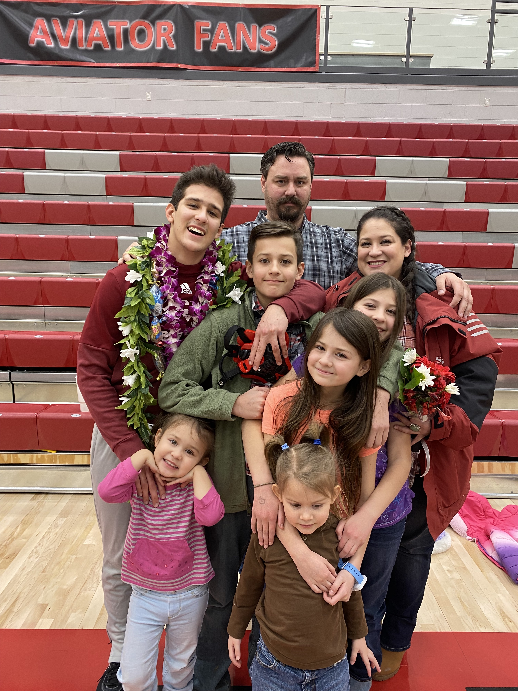
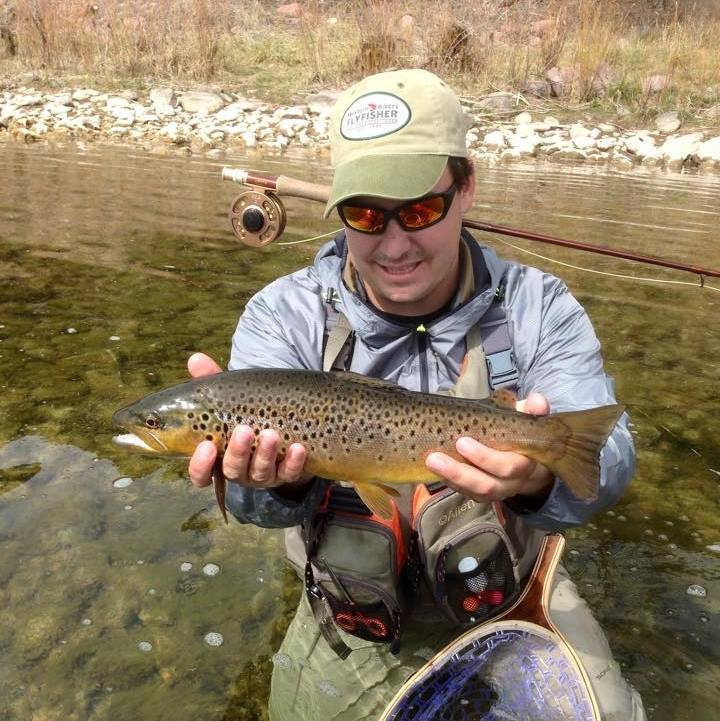
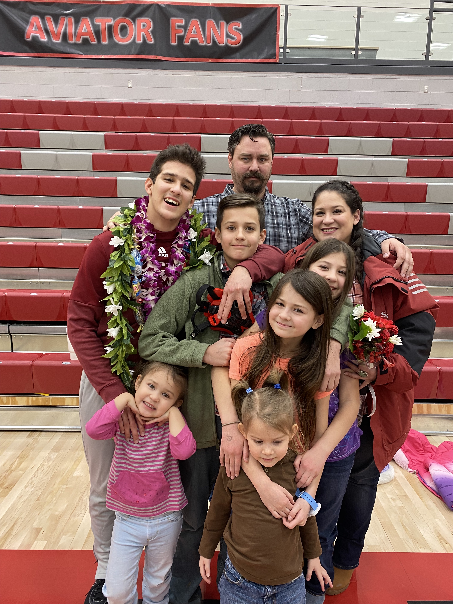
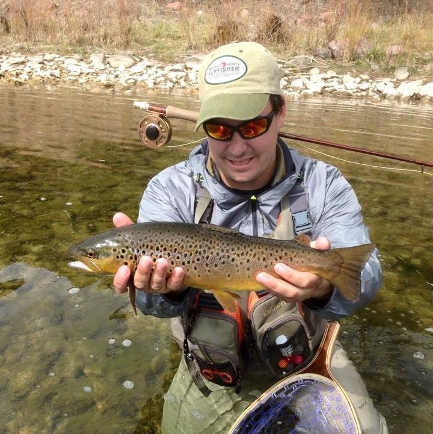
It's a hobby that I enjoy. I have a great respect for French cooking, and find myself using Julia Child's recipes on a regular basis. I am also a huge fan of wild game cooking, and I use Hank Shaw's books and website for many of my recipes. I especially like cooking waterfowl because many hunters consider them to be inedible. In truth, it is some of the most delicious game you will find. I've heard it described as steak with a bacon hat. Any dislike hunters may have for the food likely comes from poor preperation and/or a lack of cooking skills.
Below you will see, from left to right, a venison tenderloin with a blackberry wine pan sauce, a perfectly grilled ribeye, and a dungeness crab caught in Newport Oregon next to a steak in diane sauce.

 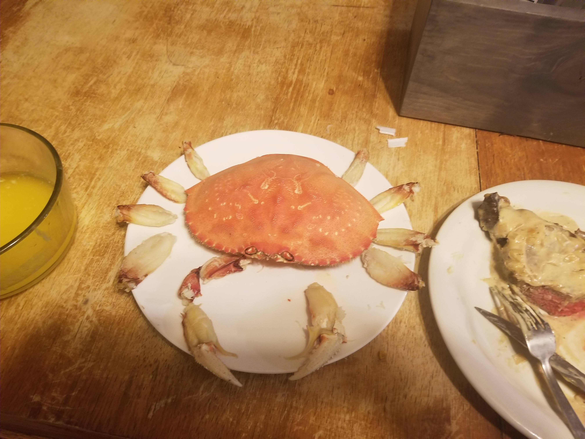
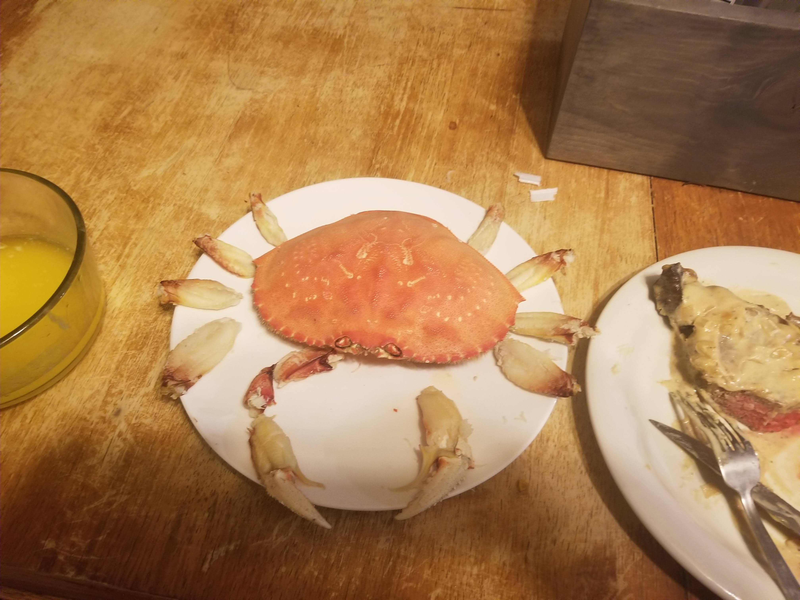